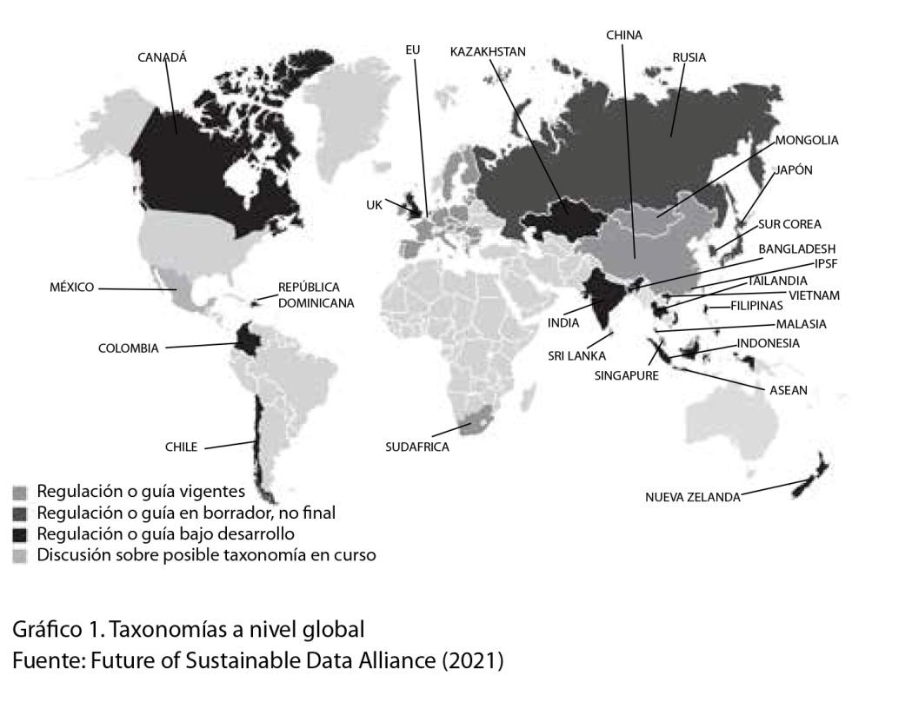
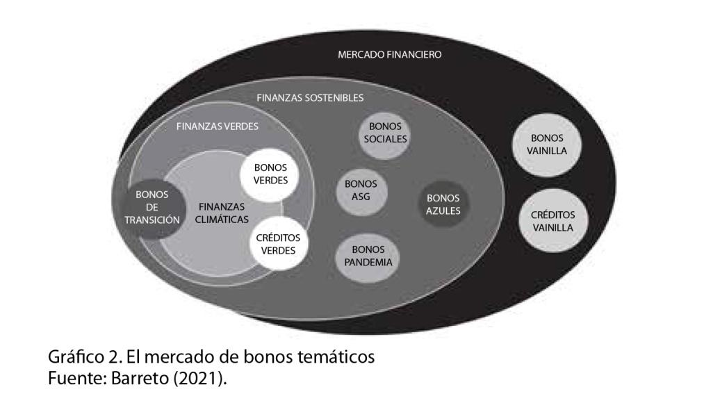
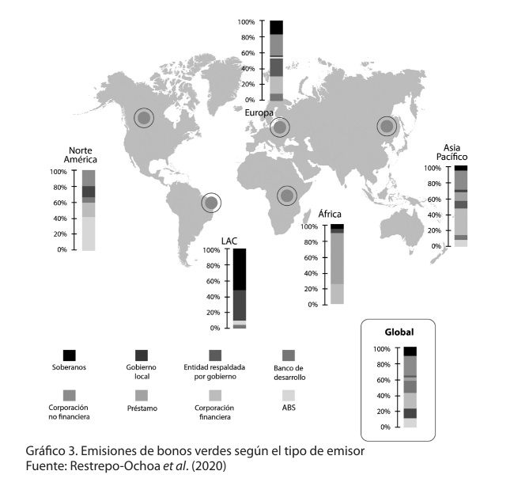
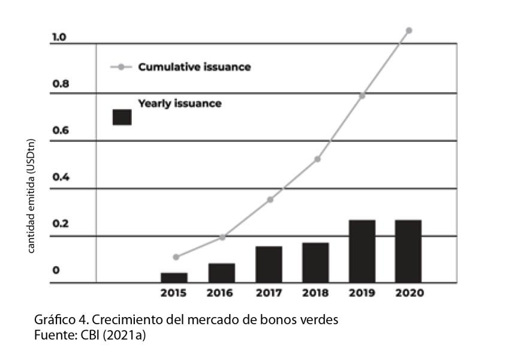
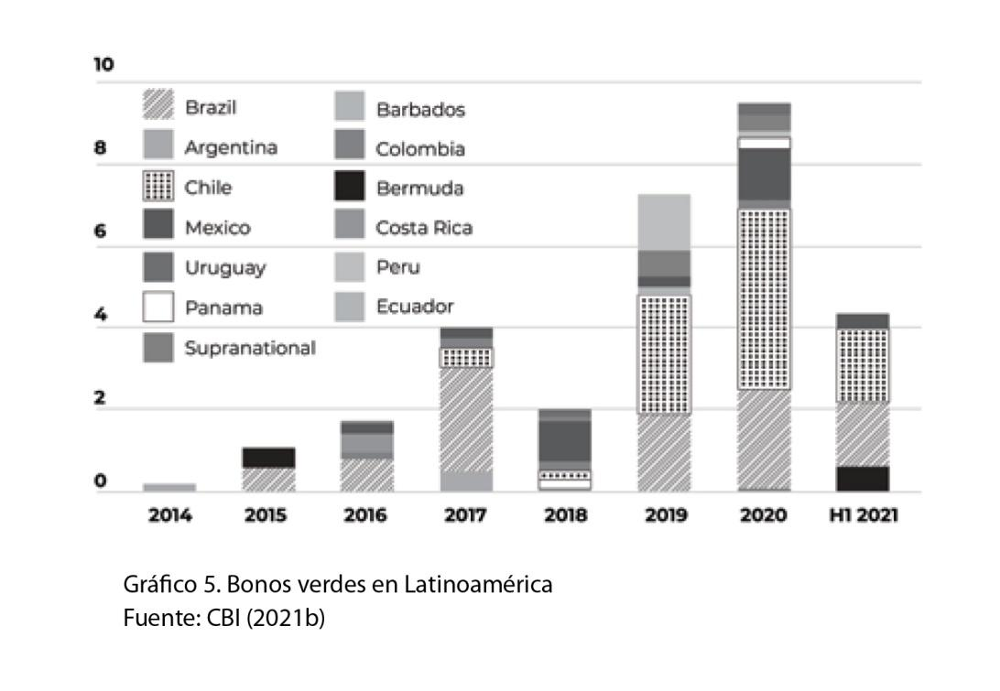

CAPÍTULO 9
Bonos verdes e inversiones privadas
en infraestructura climática

Belén Ortiz Torres
Especialista en financiamiento verde para infraestructura sostenible, licenciada en Gerenciamiento Económico Intercultural, máster en Economía y asesora política junior en la GIZ (Agencia de Cooperación para el Desarrollo del Gobierno alemán).
Contexto
Economistas y expertos de todo el mundo sostienen que el cambio climático es la mayor falla del mercado y, por lo tanto, uno de los mayores desafíos a los que se enfrentan las economías mundiales. Tras el Acuerdo de París de 2015, 196 países de todo el mundo acordaron adoptar medidas políticas para mantener el aumento medio de la temperatura global por debajo de 2 grados Celsius hasta 2050. Unos de los principales objetivos de este marco de gobernanza mundial es ayudar a las partes a movilizar recursos financieros para mitigar los efectos del cambio climático y adaptarse a sus consecuencias (United Nations Framework Conventionon Climate Change, 2021).
Si pensamos en el sector de infraestructura y planificación pública, el cual es usualmente el responsable de implementar proyectos locales contra el cambio climático, nos damos rápidamente cuenta de que los presupuestos gubernamentales no serán suficientes, porque estos presupuestos enfrentan limitaciones para financiar los costosos proyectos de infraestructuras necesarios para mitigar y adaptarse al cambio climático y así cumplir con los objetivos del Acuerdo de París. Por lo tanto, estamos atestiguando un gran déficit de inversión, especialmente en economías emergentes y países en desarrollo. La Organización para la Cooperación y el Desarrollo Económicos, u OCDE, estima que alrededor de 530.000 millones de dólares estadounidenses (USD) deberán invertirse hasta 2030 únicamente en el sector de energía para satisfacer las necesidades de infraestructuras sostenibles de sus países miembros (OCDE, 2015).
Importantes cumbres mundiales celebradas en el pasado, como el Acuerdo de París de 2015 y la Cumbre del Grupo de los Veinte (G20) de 2016, han concluido reiteradamente que los mercados financieros desempeñan un papel crucial para cumplir con los objetivos climáticos. En consecuencia, los responsables políticos están tomando conciencia de la gran importancia de los flujos de capital privado y de los recursos financieros asequibles para proyectos de infraestructura sostenibles. Al mismo tiempo, se anima cada vez más a los inversores a incorporar criterios ambientales, sociales y de gobernanza, los llamados criterios ASG (o ESG, según sus siglas en inglés), en sus carteras de inversión. Uno de los instrumentos financieros más prometedores para satisfacer las necesidades de los responsables políticos y los inversores son los bonos verdes (Banga, 2019).
Los acuerdos internacionales establecieron que la gobernanza mundial y las fuentes financieras públicas por sí solas no serán suficientes para mitigar los impactos económicos y medioambientales del cambio climático (Freeburn y Ramsay, 2020). La transición hacia una economía más resiliente requiere un cambio profundo en los patrones de inversión. Este es el contexto en el que la aplicación de los bonos verdes resulta oportuna. En palabras del exsecretario general de las Naciones Unidas (ONU), Ban Ki-Moon, los bonos verdes son "uno de los avances más significativos en la financiación de oportunidades de inversión bajas en carbono y resilientes al clima" (CBI, 2018).
Autores como Serebrisky et al. (2015), Banga (2019) y la OCDE (2012) destacan que la crisis financiera de 2008 y las posteriores medidas adoptadas por el Banco Central Europeo redujeron las inversiones privadas en proyectos de infraestructuras. Como los bancos comerciales se enfrentaban a restricciones de capital y liquidez, se hizo más caro obtener préstamos bancarios con vencimientos a largo plazo. Cuando los préstamos bancarios para proyectos a largo plazo se encarecen, instrumentos como los bonos se convierten en una mejor opción. Además, era necesario reducir el gasto público. Por lo tanto, los bancos multilaterales de desarrollo, el G20, el mundo académico y think tanks empezaron a abogar por más capital privado para financiar proyectos de infraestructura (Serebrisky et al., 2015).
También es remarcable la hipótesis que presenta Banga (2019) de que el reciente desarrollo del mercado de bonos verdes fue, en parte, consecuencia de la política monetaria no convencional aplicada por los principales bancos centrales tras la crisis financiera de 2008. Especialmente en las economías avanzadas, la incapacidad de los bancos centrales de restablecer la recuperación económica a través de métodos convencionales se tradujo en tipos de interés históricamente bajos. En consecuencia, los inversores institucionales (es decir, los fondos de pensiones y las compañías de seguros) buscaron diferentes opciones de inversión para hacer sus productos más atractivos para sus clientes y reducir sus costes de provisión de pensiones debido a la caída de los tipos de interés (Kliesen y King, 2017). Por lo tanto, estos agentes del mercado empezaron a buscar nuevas oportunidades que se ajustaran a sus horizontes de inversión y diversificaron sus carteras.
Como ya señaló Banga (2019), los inversores institucionales, quienes representan la demanda principal del mercado de bonos verdes, parecen haberse dado cuenta de que la inversión sostenible puede preservar la riqueza y proporcionar flujos fiables de ingresos, lo que reduce, como consecuencia, la volatilidad de sus carteras.
Definición y relevancia de los bonos verdes como instrumentos de financiación climática
Los bonos verdes son instrumentos financieros de renta fija cuyos fondos deben invertirse en proyectos beneficiosos para el medio ambiente. Estos bonos, exactamente igual que los bonos "vainilla", como se los llama a los bonos convencionales, se utilizan como instrumento de deuda para la financiación o refinanciación a largo plazo de proyectos. Además, se aplican no sólo para proyectos o actividades de empresas responsables con el medio ambiente, sino también para programas públicos de desarrollo sostenible y para todo tipo de proyectos relacionados con el clima. Pueden estructurarse, por ejemplo, como bonos para proyectos o valores respaldados por otros activos que generen ingresos (World Bank, 2015; Cheong y Choi, 2020). Los fondos recaudados a través de los bonos suelen utilizarse en sectores como las energías renovables, la eficiencia energética, el transporte limpio, el manejo sostenible de residuos, reforestación y gestión sostenible de los recursos naturales, entre otros.
La principal diferencia entre los bonos verdes y los bonos convencionales radica únicamente en el destino de la inversión o de los ingresos. Otra característica similar al mercado de bonos convencionales es que los bonos verdes pueden ser emitidos tanto por el sector público como por el privado. Es decir, que este instrumento puede ser aplicado por entidades gubernamentales o privadas; por ejemplo, empresas privadas, instituciones financieras y gobiernos nacionales y subnacionales. El hecho de que la estructura financiera de un bono verde sea la misma que la de un bono convencional, hace que sean, en su mayoría, idénticamente atractivos para los inversores (Rumpf, 2019). Así, de forma muy similar a los bonos convencionales, los bonos verdes son un instrumento de financiación de deuda utilizado para obtener capital para inversiones a largo plazo con riesgo relativamente bajo (Weber y Saravade, 2019). Además, dependiendo de la legislación del país, los bonos verdes pueden estar sujetos a beneficios impositivos. No obstante, a nivel mundial, el mercado de los bonos verdes representa en torno al 1% del mercado total de bonos e instrumentos de renta fija (Ketterer et al., 2019).
Como fue mencionado anteriormente, las inversiones en infraestructuras sostenibles son cruciales para reducir los actuales niveles de emisiones de carbono y poder adaptarnos al cambio climático. Sin embargo, muchos actores, especialmente del sector público, no consiguen movilizar financiación suficiente para cubrir sus necesidades de infraestructuras verdes. Esto no se debe a que no haya suficientes recursos financieros a nivel mundial, sino a que muchos actores de mercado carecen de capacidades técnicas o conocimiento suficiente para la emisión de un bono verde (The Global Commission on the Economy and Climate, 2014).
¿Qué hace a un bono convertirse en "verde"?
La cuestión de qué tipo de bono puede clasificarse como bono verde no siempre es sencilla. De hecho, la falta de armonización y de normas comunes en el mercado se han mencionado en la literatura como los principales obstáculos que deben abordarse urgentemente. La falta de una definición común obstaculiza su desarrollo en economías emergentes. Las normas son una parte central de toda estructura de mercado. Son necesarias para crear transparencia y, por lo tanto, credibilidad en un activo financiero específico. Este problema de definición en el mercado de los bonos verdes se refiere principalmente a la pregunta: ¿qué es verde?
Debido a esta falta de definición, la organización Climate Bonds Initiative (CBI) lanzó los primeros estándares de bonos climáticos y sistema de certificación en 2010 (Beschloss y Mashayekhi, 2019). Además, la Asociación Internacional de Mercados de Capitales (ICMA) también tomó la iniciativa y publicó los Principios de bonos verdes en enero de 2014.Estos estándares fueron catalizadores clave para el desarrollo del mercado y un fundamento importantepara combatir el llamado "lavado verde" (greenwashing). Por lo tanto, fueron los primeros marcos para definir qué hace que un bono verde pueda ser denominado realmente "verde". Sin embargo, ambos estándares son voluntarios, lo que quiere decir que los emisores no están obligados a aplicarlos. En opinión de Beschloss y Mashayekhi (2019), ambos marcos ganaron autoridad al reclutar a científicos y líderes del mercado para desarrollar normas y métricas rigurosas y al ganarse el apoyo de un gran número de emisores e inversores. Además, los Principios de bonos verdes se actualizan cada dos años.
Por último, es necesario describir la función esencial de las taxonomías verdes en este mercado. Las taxonomías son, por definición, esquemas científicos de clasificación y definición (CBI, 2021a), y son los documentos más relevantes para saber si un proyecto es verde. Esta herramienta ayuda a emisores, inversores y gobiernos a comprender qué tipo de inversiones contribuirán a la economía baja en carbono. Por lo general, una taxonomía se desarrolla considerando perspectivas de múltiples partes interesadas con el apoyo de un grupo técnico y representantes de la industria local (CBI, 2015). El siguiente gráfico muestra una visión general de las taxonomías y directrices para bonos verdes en todo el mundo. El gráfico muestra claramente una discrepancia entre el hemisferio norte y el hemisferio sur. La mayoría de los países nórdicos ya han establecido sus propias directrices o taxonomías verdes, mientras que la mayoría de los países africanos y sudamericanos no lo han hecho aún.

Por otro lado, cabe destacar que las taxonomías no son vinculantes y una de sus principales críticas es que aún son demasiado "blandas".
Como fue mencionado anteriormente, una taxonomía es una guía para inversiones alineadas a la protección del medio ambiente, pero no son regulaciones vinculantes de mercado. Por lo tanto, necesitamos marcos políticos y normativas más estrictas si queremos realmente evitar el "lavado verde". Actores públicos y la sociedad civil responsabilizan a los bancos por el "lavado verde", pero lo cierto es que las taxonomías aún están en fase de desarrollo. El reto está en asegurar alineamiento verde sin desincentivar inversiones verdes.
Localización de los bonos verdes en el sistema financiero
El gráfico 2 representa el amplio mercado de bonos temáticos. Los dos principales instrumentos utilizados en el mercado de deuda, en general, son los bonos "vainilla" y los préstamos "vainilla". Luego, dentro de este mercado, está el sector de las finanzas sostenibles. Los bonos temáticos, como los bonos ASG, azules y sociales, forman parte de esta categoría más amplia de bonos (Barreto, 2021). Este sector tiene como objetivo asignar fondos a proyectos verdes y sociales en general.
Dentro del sector de las finanzas sostenibles, se puede distinguir entre dos categorías: finanzas verdes y finanzas climáticas. Las finanzas climáticas se centran en proyectos de mitigación y adaptación al cambio climático, mientras que el sector de las finanzas verdes puede asignar capital en otros temas no directamente relacionados con el clima, como la protección de la biodiversidad y la economía circular. Según Barreto (2021), basándose en las taxonomías verdes más recientes, los bonos verdes pueden recaudar fondos para todo tipo de proyectos que contribuyan a una trayectoria de cero emisiones de carbono hasta 2050 y, por lo tanto, pueden situarse en la intersección entre las finanzas verdes y las finanzas climáticas. Los bonos de transición se centran en productos y proyectos que aún no tienen una trayectoria clara de carbono cero pero que son cruciales por su impacto medioambiental como, por ejemplo, las industrias de metal y construcción (Barreto, 2021).

Tipos de los bonos verdes
No obstante, existen diferentes modelos de clasificación para los bonos verdes. Pueden clasificarse en función del tipo de emisor o del destino asignado para los fondos recaudados. Los bonos verdes en cuanto al tipo de emisor son, por ejemplo, los bonos verdes corporativos, los bonos verdes soberanos, bonos verdes municipales o provinciales y los bonos verdes de instituciones financieras. El gráfico 3 ilustra la distribución actual de los tipos de emisores de bonos verdes por región de acuerdo con los volúmenes de emisión.
Los emisores con sede en Europa, Norteamérica y Asia-Pacífico han sido los principales responsables de la emisión mundial, con los emisores europeos a la cabeza en 2017 y 2018. Además, en Europa se observan proporciones relativamente parejas entre los bonos verdes emitidos por gobiernos nacionales, gobiernos locales e instituciones no financieras.

Además, la ICMA clasifica los bonos verdes según su estructura y uso de fondos. Según esta clasificación, existen cuatro categorías principales de bonos verdes: bonos verdes estándares de uso de los ingresos (completamente colateralizado por el emisor), bonos verdes de ingresos (colateralizado por los ingresos del emisor), bonos verdes de proyectos (colateralizado por los activos generados por el proyecto a financiar) y bonos verdes titularizados (colateralizado por otros activos o grupo de proyectos del emisor).
Finalmente, existe una nueva categoría de bonos verdes llamados sustainability-linked bonds. En este tipo de bonos, el cumplimiento de los criterios ASG pueden ser medidos con el uso de indicadores de rendimiento, a diferencia de los bonos verdes estándares de uso de los ingresos. Lo innovador de este instrumento es que, si los emisores no cumplen con los indicadores, tienen que pagar una sanción equivalente a un interés más alto a sus inversionistas. Esto aumenta el compromiso a cumplir con los objetivos de sostenibilidad ligados al capital recaudado. Chile fue un país pionero que emitió las primeras directrices y un marco los sustainability-linked bonds. En el 2022, Chile se convirtió en el primer país en emitir un bono soberano en esta categoría.
El estado actual del mercado
El primer bono verde de la historia, que se denominó "bono de concienciación climática", fue emitido por el Banco Europeo de Inversiones en 2007. Este primer bono verde fue estructurado como un bono de renta fija convencional, pero fue un bono inaugural que introdujo el concepto de destinar deuda a inversiones relacionadas con el medio ambiente. Un año después, en 2008, el Banco Mundial emitió su propio bono verde por 294 millones de dólares. El mercado creció lentamente durante 2009 y 2013 y se caracterizó en esta fase por emisiones a pequeña escala de los bancos multilaterales de desarrollo en los mercados nacionales.
Durante 2013 y 2014 el mercado experimentó una fase de diversificación y estandarización de emisores con mayores tamaños de emisión. Por ejemplo, en el año 2013 se emitió el primer bono verde municipal del estado de Massachusetts y un segundo de la ciudad de Gotemburgo, Suecia, en el mismo año. Posteriormente, en noviembre de 2013, se emitieron los primeros bonos verdes corporativos de las empresas Vasakronan y électricité de France, que fue el mayor bono hasta la fecha (1.000 millones de euros).Además, ese mismo año, Zurich Insurance tomó la iniciativa por parte de los inversores institucionales y se comprometió a invertir 1.000 millones de dólares en bonos verdes.
Durante 2014 y 2015, el mercado experimentó un enorme crecimiento: triplicó las emisiones hasta alcanzar los 37.000 millones de dólares (Monky Perkins, 2020). Este periodo es denominado la "fase de exaltación" del mercado porque experimentó un aumento de la diversificación en cuanto a los tipos de bonos corporativos, como el primer bono verde respaldado por activos de Toyota.
Entre 2015 y 2016, el mercado fue testigo de una diversificación geográfica por parte de los actores de las economías emergentes. Los primeros emisores de economías emergentes habían sido Corea del Sur y Taiwán en 2013 y 2014, respectivamente. Luego, las emisiones procedentes de economías emergentes se aceleraron rápidamente a partir de finales de 2015, con China como principal impulsor. Este país representó más de la cuarta parte de las emisiones de bonos del tesoro en 2016 (CBI, 2016). Además, en este periodo emisores de Brasil, Costa Rica, Colombia, México, Turquía, Filipinas e India siguieron la tendencia. Por último, los gobiernos nacionales ingresaron al mercado con el primer bono verde soberano de Polonia en diciembre de 2016 (Monky Perkins, 2020).
Según el Climate Bonds Initiative (2021a), a finales de diciembre de 2020 se habían emitido bonos verdes por un total de 269.500 millones de dólares. Las emisiones registradas en ese año fueron las más elevadas desde la aparición de los primeros bonos climáticos en 2007. Además, el mercado mantiene la tendencia de nueve años consecutivos de crecimiento al alza. El gráfico 4 ilustra las emisiones anuales (en azul) y totales acumuladas (en verde) del 2015 al 2020. Allí puede verse que el mercado experimentó un crecimiento medio anual del 60% desde 2015 y alcanzó en 2020 un total acumulado de 1,05 billones de dólares emitidos en bonos verdes (CBI, 2021b). Ahora bien, si nos fijamos específicamente en el mercado latinoamericano, el año 2020 también fue un año récord en cuanto al tamaño de las emisiones de bonos verdes. Chile y Brasil son los dos principales emisores del continente. La región vio un resurgimiento de las emisiones en el año 2019 después de una fuerte reducción en 2018.

En 2020 las emisiones totales superaron los 4.000 millones de dólares, lo que representa un crecimiento del 33% con respecto al año 2019. Este crecimiento fue liderado principalmente por las emisiones soberanas de Chile. En suma, el total acumulado de emisiones de bonos verdes de la región hasta junio del 2021 alcanzó los 30.240 millones de dólares. Además, el número de países latinoamericanos que entraron en el mercado en 2020 ascendió a doce, mientras que en 2019 sólo ocho países participaban (CBI, 2021b). Finalmente, cabe destacar que los nuevos países que ingresaron al mercado fueron Barbados, Bermuda, Ecuador y Panamá.

Oportunidades de las emisiones de bonos verdes
Ampliación de la base de inversores
Las emisiones de bonos verdes, en todas sus categorías, obtienen usualmente un exceso de demanda. Esto se llama exceso de suscripción en términos financieros. Según Weber y Saravade (2019), el exceso de suscripción de los bonos verdes puede deberse a las asimetrías entre la oferta y la demanda y al más amplio número de inversores interesados, tanto en bonos convencionales como en bonos verdes. La oferta es usualmente menor que la demanda. Esta asimetría conlleva a la ampliación de la llamada "base de inversores" para los emisores de bonos verdes. Y es una ventaja espacialmente importante para los emisores primerizos. Esta base de inversores ampliada diferencia el mercado de bonos verdes del mercado tradicional de bonos, ya que incluye a inversores "verdes", ASG o socialmente responsables. Los inversores que incluyen criterios ASG en su análisis de mercado siguen estrategias medioambientales particulares y suelen tener una clase de activos separada que se centra en inversiones que combaten el cambio climático (Sreelekshmi y Thasneem, 2020). Dada esta base de inversores más diversa, una emisión de bono verde puede ser más atractiva que la emisión de un bono "vainilla". En este sentido, Harrison y Boulle (2017) sostienen que la ampliación de la base de inversores beneficia al emisor de los bonos verdes al ofrecer más estabilidad en tiempos de incertidumbre económica. En la literatura, muchos autores coinciden en que la ampliación de la base de inversores es uno de los principales beneficios de emitir un bono verde. Desde la perspectiva del inversor, los bonos verdes también se consideran un instrumento de diversificación de la cartera. A través de sus inversiones en bonos verdes, los compradores pueden diversificar su riesgo al invertir en diferentes categorías de proyectos sostenibles (Nisi, 2019).
Los bonos soberanos suelen mostrar una base de inversores nacionales bastante consistente. Sin embargo, tras las emisiones de los primeros bonos verdes soberanos de Polonia, por ejemplo, el país experimentó una importante diversificación de inversores interesados en sus bonos. El 61% del conjunto de inversores eran nuevos inversores "verdes" de los cuales casi ninguno de ellos había adquirido anteriormente bonos soberanos de Polonia. Esta diversificación de la base de inversores podría ser especialmente beneficiosa para los emisores de economías emergentes.
Reducción de la brecha de inversión en infraestructura climática
Como se ha mencionado anteriormente, los bonos verdes son especialmente adecuados para horizontes de inversión a largo plazo. La madurez a largo plazo de los bonos verdes es una característica beneficiosa para los proyectos de infraestructuras sostenibles para combatir el cambio climático. Los tipos de interés de los bonos verdes son fijos durante todo el plazo, incluso en plazos de vencimiento muy largos (de 10 a 30 años). Esta característica proporciona seguridad de planificación al emisor y desarrolladores de proyectos. De esta manera, este instrumento financiero tiene el potencial de movilizar significantes sumas de dinero para proyectos de infraestructura sostenible, tanto en mitigación como adaptación para el sector público y privado.
Introducción de factores ASG en la toma de decisiones de inversión
Naturalmente, el creciente interés de los inversores por invertir en activos verdes representa una oportunidad para los potenciales emisores de bonos verdes. Según Swope (2016), dos de los principales motivos del gran interés de los inversores en bonos verdes son, por un lado, la contribución a una economía ecológicamente más sostenible y responsabilidad socioambiental y, por el otro lado, el riesgo climático de inversiones convencionales. Por esto, se afirma que existen aspectos tanto "morales" como económicos para las inversiones en bonos verdes.
Un cambio importante en los paradigmas del mercado financiero fue la introducción de los factores ASG en la toma de decisiones de inversión. En opinión de Rumpf (2019) uno de los principales impulsores del mercado de bonos verdes han sido los inversores institucionales, quienes tienen en cuenta mandatos verdes y criterios ASG para sus carteras de inversión.
Diferentes actores del mercado aseguran que los inversores están desarrollando más opciones de inversión ASG en los países emergentes. María Ruíz Sierra, responsable de inversión sostenible de Sura Investment Management en América Latina, afirmó que la demanda de los inversores en términos de este tipo de oportunidades "no va a ocupar los mismos titulares que en otros mercados, pero los inversores están impulsando la conversación".
Los inversores institucionales (fondos de pensiones, las compañías de seguros, los fondos de inversión estatales, por ejemplo) parecen ser el lado natural de la demanda de bonos verdes. Buscan activos financieros de bajo riesgo y largo vencimiento. Estas necesidades encajan con la estructura financiera de los bonos verdes, que resultan especialmente atractivos para los inversores con mandatos ecológicos y compromisos medioambientales. Además, los gobiernos y los bancos multilaterales de desarrollo de todo el mundo están trabajando para ayudar a los inversores institucionales a acceder a este tipo de vehículos financieros con un perfil de riesgo y rentabilidad beneficioso para todas las partes involucradas.
Señal de compromiso medioambiental y apoyo político internacional
Una emisión de bonos verdes puede ser una fuerte señal de compromiso medioambiental para el mercado. Los emisores de bonos verdes, especialmente los que lo hacen por primera vez, suelen aparecer en comunicados de prensa formales y reciben una amplia exposición en los medios, especialmente cuando declaran que han logrado etiquetar oficialmente un bono como "verde". Es el denominado"efecto anuncio". Esto conlleva beneficios de imagen y reputación que se transmiten directamente al mercado y podrían contribuir a ampliar aún más la base de inversores de la entidad emisora. A través de este efecto, especialmente cuando el bono está certificado por un tercero, no sólo los inversores en bonos se darán cuenta de la emisión, sino que también los inversores en acciones se fijarán potencialmente en ella. En opinión de Adhikari (2016), los instrumentos de marketing posteriores a la emisión podrían contribuir a mejorar la imagen pública y el acceso a recursos financieros adicionales, como subvenciones o financiación de fondos multilaterales para el clima y créditos de bancos de desarrollo. Por lo tanto, los bonos verdes son una potente herramienta de marketing para los emisores en búsqueda de amplio financiamiento para acción climática.
Además, señales políticas como el Acuerdo de París han influido en el desarrollo del mercado de los bonos verdes. Por ejemplo, durante la Cumbre del G20 celebrada en 2016 en Hangzhou, los líderes políticos más influyentes acordaron "apoyar el desarrollo de los mercados locales de bonos verdes y promover la colaboración internacional para facilitar las inversiones transfronterizas en bonos verdes" (European Commission, 2016). Este apoyo político al mercado representó una fuerte señal positiva para los inversores y, por lo tanto, contribuye al crecimiento del mercado (Banga, 2019).
Barreras y desafíos específicos del instrumento para proyectos de adaptación
Los productos financieros verdes aplican una óptica de sostenibilidad a los préstamos tradicionales. Los bonos verdes se encuentran entre los productos financieros sostenibles más visibles y están emergiendo como instrumento de financiación para soluciones basadas en la naturaleza.
Como hemos visto en este capítulo, los bonos verdes son un instrumento de deuda de renta fija que requieren un cierto retorno al inversor. Los proyectos de adaptación al cambio climático, especialmente las soluciones basadas en la naturaleza, son un concepto relativamente nuevo.
Una de las principales barreras que dificultan el uso de bonos verdes como instrumento de financiamiento para proyectos de adaptación es que el retorno financiero no es evidente (Lopez Portillo, Gómez y Rodriguez, 2022). Otra de las barreras es que este tipo de proyectos requieren una inversión inicial de capital muy alta, lo que representa un alto riesgo para el inversor. Los volúmenes necesarios para proyectos de adaptación son proporcionalmente mucho más altos que los volúmenes necesarios para proyectos de mitigación.
Pero la inversión en adaptación al cambio climático es una inversión a futuro que evita costos económicos por pérdidas y daños a, por ejemplo, la infraestructura, ya sea pública o privada. Sin embargo, la cuantificación de dichos beneficios y su difusión son sumamente complejas. Por esta dificultad de metrización, el sector de adaptación no se encuentra incluido en las taxonomías actuales, lo cual impone una gran barrera al financiamiento y uso de los bonos verdes para proyectos de adaptación.
Numerosos actores, como universidades y agencias de cooperación internacional, se encuentran trabajando en la metrización del sector para movilizar capital privado y para que el sector de adaptación pueda ser incluido en las taxonomías. Una de las soluciones más pragmáticas para acelerar inversiones en el sector es incluir proyectos de adaptación a una cartera verde que contenga otro tipo de proyectos que generen retorno como, por ejemplo, proyectos de energías renovables. Esto se denomina project bundling. Una amplia y diversa cartera verde puede ser financiada por una emisión de bono verde de mayor volumen y hacer posible un alto impacto positivo, tanto en mitigación como en adaptación al cambio climático.